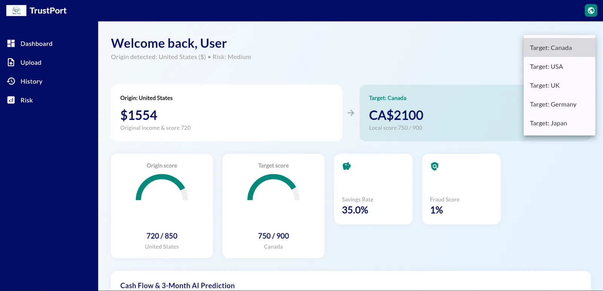
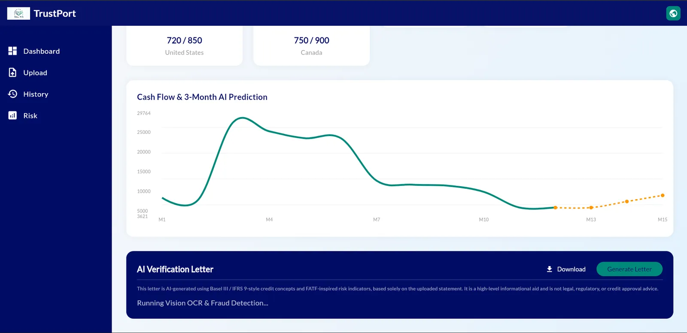
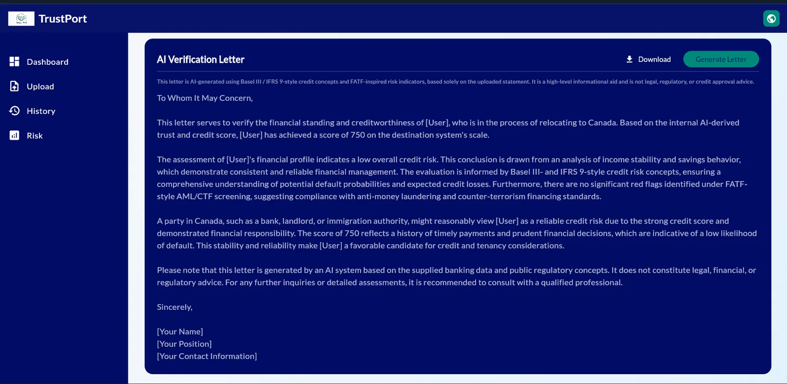
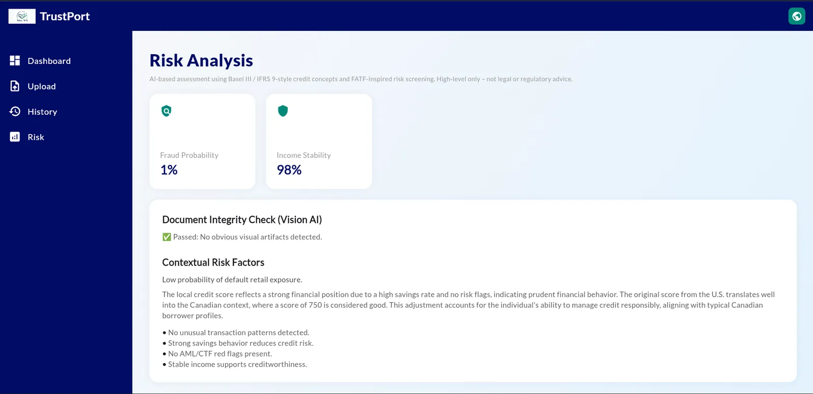
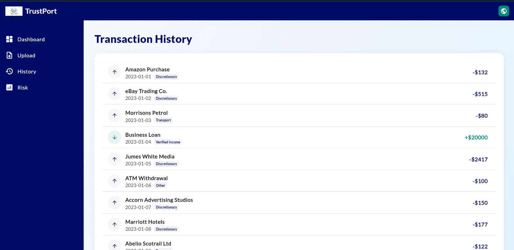

← Selected work
TrustPort
Turns a foreign bank history into a local “shadow” credit score and a verification letter that landlords can check.

Overview
Skilled professionals who move abroad struggle to rent a flat or get a credit card because their financial history doesn't travel with them.
TrustPort takes an uploaded bank statement, checks it for tampering, scores the cash flow, converts the score into the destination country's scale, and produces a watermarked PDF verification letter.
What I did
- 01Wrote a FastAPI backend with two AI models: Gemini 2.0 Flash inspects the document for pixelation, font mismatches and edits before any data is processed.
- 02Prompted GPT-4o with Basel III probability-of-default and FATF anti-money-laundering rules to assess risk and income stability.
- 03Built a regex privacy step that strips emails, phone numbers and ID numbers before anything reaches an LLM.
- 04Built a Flutter Web dashboard with currency conversion, a 3-month cash-flow forecast and in-browser PDF generation.
- 05Built a synthetic bank-statement dataset to fine-tune an ERNIE vision-language model for the ERNIE AI Developer Challenge.
Signal path
- Statement upload
- PII scrubber
- Gemini vision check
- GPT-4o risk engine
- Score conversion
- Signed PDF
Gallery · 4 images
A closer look



